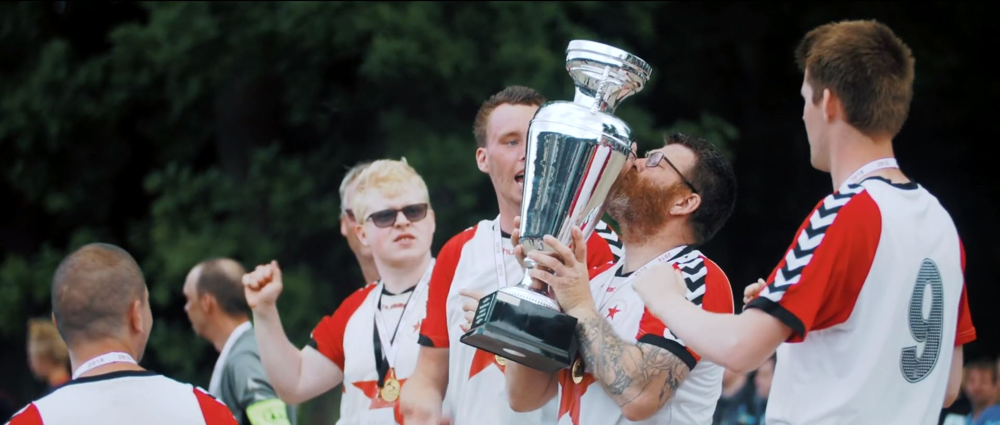
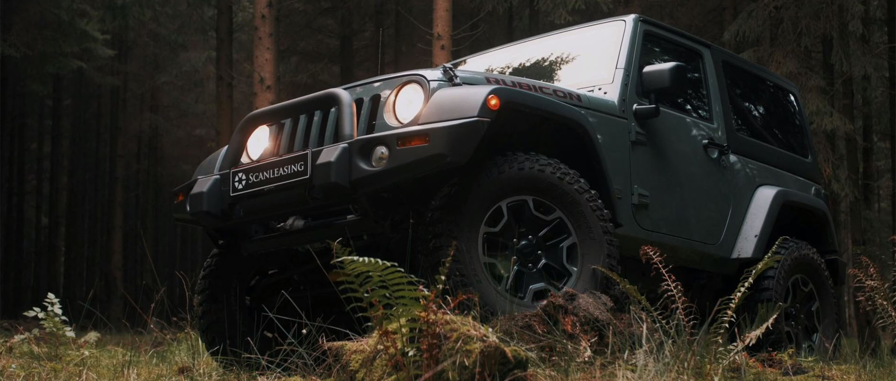
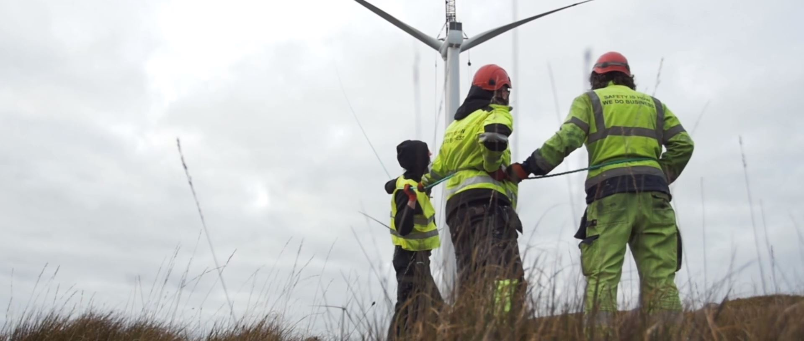

Vores løsninger er

EVENTVIDEO er altid god til at forklarer et event. Fang, forklar og videreformidle stemningen med video og ikke kun med ord ...

PRODUKTVIDEO der kan fremvise de bedste vinkler på jeres produkt i ønsker fremvist. Der er ingen produkter der er for små eller store ...

REKRUTTERINGSVIDEO er ikke “end all be all”. Det er en appetitvækker og blikfang. Den arbejder godt på de sociale medier og skulle gerne fange nogle leads ...
DRONEVIDEO får din virksomhed til at skille sig ud for mængden, med en unik dronevideo kan du tiltrække opmærksomheden til din virksomhed ...

PROFILVIDEO formidler enten din virksomhed eller enkelte personer, som ikke meget andet kan. Det er som at slå op i et leksikon og finde definitionen på lige netop din profil ...

REKLAMEVIDEO må meget gerne være humoristisk og have lidt kant. Reklamevideo kan klippes til i forskellige længder, så den passer til forskellige platforme ...